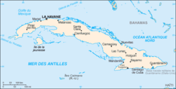
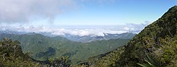

Cuba
To know:

Capital: Havana
Form of State: Socialist Republic
President: Miguel Díaz-Canel
Population: Around 11 million (2024)
Language: Spanish
Currency: Cuban Peso (CUP)
Cuba is an island country located in the Caribbean, south of Florida and the Bahamas, east of Mexico, and northwest of Jamaica. It is made up of the main island of Cuba, the Isle of Youth, and several smaller archipelagos. Cuba is known for its vibrant culture, revolutionary history, beautiful beaches, and lively music. The country is governed by a single-party communist system with a centralized political structure.
Culture
Cuba has a rich culture influenced by African, Spanish, and Caribbean roots. The country is globally recognized for its musical contributions, including son cubano, salsa, cha-cha-cha, rumba, and bolero.
Famous artists such as Compay Segundo, Celia Cruz, and the Buena Vista Social Club have brought Cuban music to the world stage.
Dance is also an essential part of Cuban life, as is literature, with writers like Nicolás Guillén and José Martí being national icons.
Religion
Cuba has been officially secular since 1992, and religious freedom is recognized. The majority of the population identifies as Roman Catholic, but other religions such as Protestantism and Santería (an Afro-Cuban syncretic religion) are also practiced. Under communist rule, religion was restricted for several decades, but there has been more openness since the 1990s.
